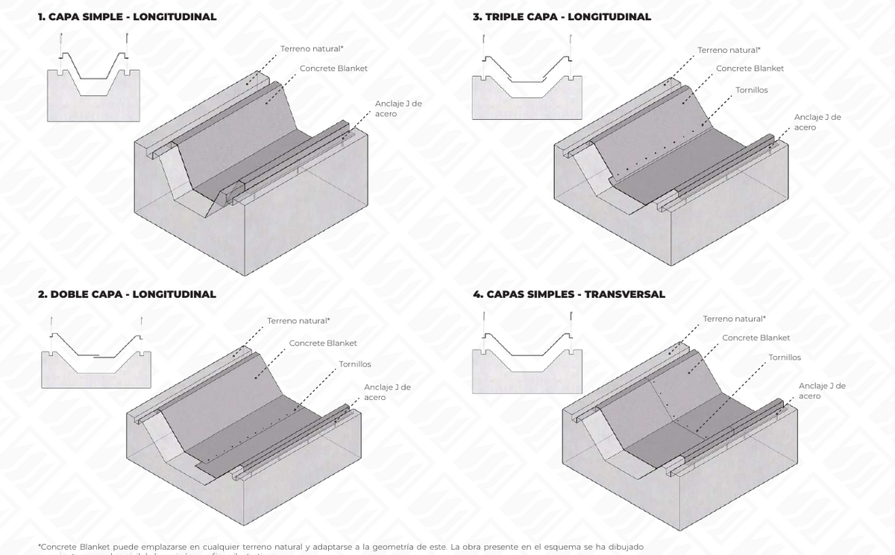
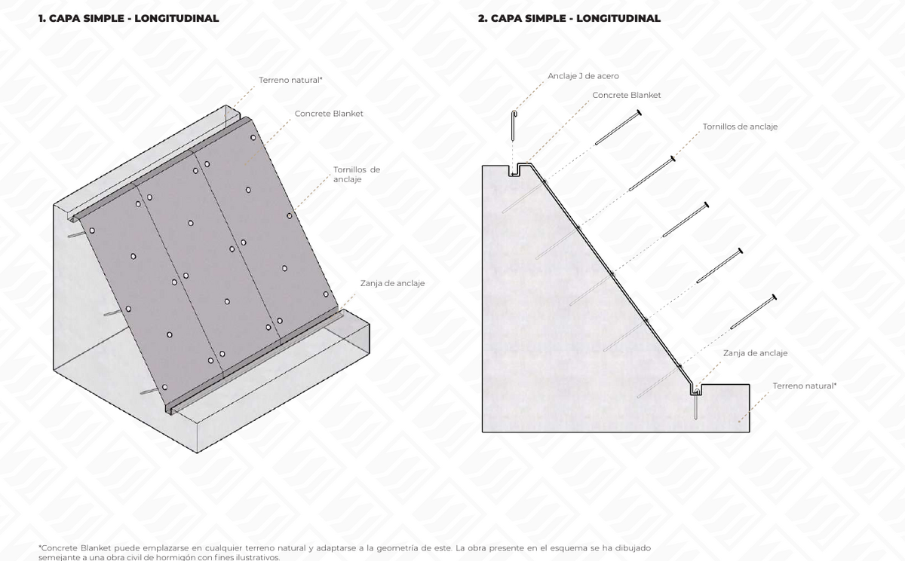
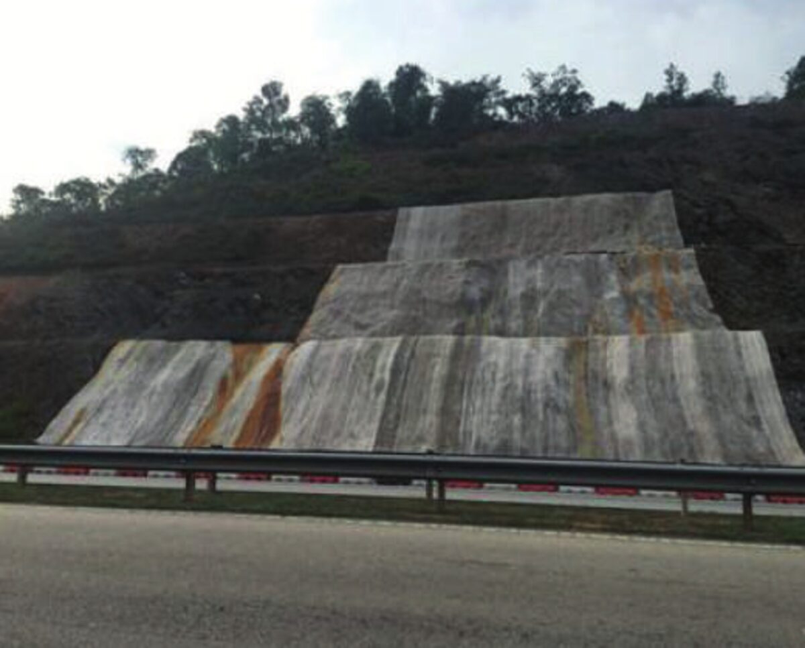
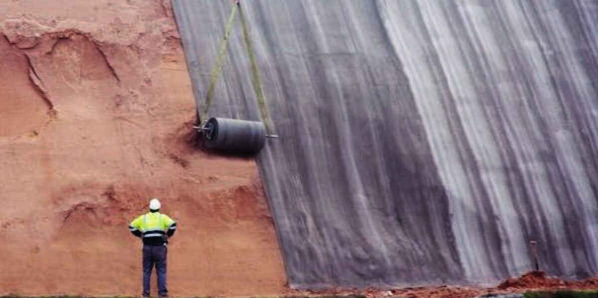

Protección de taludes
Estabilización de taludes de pendiente elevada y terrenos irregulares.

Concrete Blanket se adapta a curvas, pendientes y geometrías complejas sin moldajes ni piezas especiales.
Desde obras hidráulicas hasta protección de infraestructura, en proyectos públicos y privados.
Estabilización de taludes de pendiente elevada y terrenos irregulares.
Refuerzo y protección de estructuras de gaviones frente a la erosión.
Protección anticorrosión para estructuras expuestas al agua de mar.
Revestimiento impermeable para tranques de acumulación.
Protección de la superficie de represas y embalses.
Control de erosión y conducción de agua en canales de riego.
Protección y revestimiento de tuberías y ductos.
Carreteras temporales y usos ferroviarios.
Sellado y protección de superficies en vertederos.
Concrete Blanket ofrece ventajas para su uso en la construcción y revestimiento de canales, gracias a su facilidad y velocidad de instalación. Una vez colocado, se activa con agua, lo que permite que el hormigón se endurezca y adopte la forma deseada en pocas horas, brindando una protección robusta contra la erosión y el desgaste.
Puede ajustarse a curvas, pendientes y variaciones en el terreno sin necesidad de moldear o cortar piezas complejas. A diferencia de los métodos tradicionales, no se requiere el uso de moldajes.




Concrete Blanket es una eficiente solución para la protección y estabilización de taludes, principalmente por su instalación rápida y sencilla. El material viene en rollos que se extienden directamente terreno abajo, lo que facilita enormemente el proceso comparado con los métodos convencionales de hormigón.
Tras activarse con agua, el material se endurece rápidamente, formando una barrera de hormigón robusta que protege el talud contra la erosión, la lluvia y posibles deslizamientos.



Cuéntanos los detalles y te asesoramos sin costo.